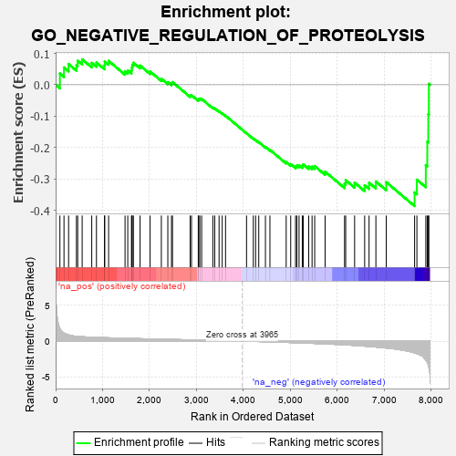
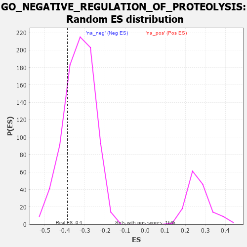

| | | Dataset | 7d |
| Phenotype | NoPhenotypeAvailable |
| Upregulated in class | na_neg |
| GeneSet | GO_NEGATIVE_REGULATION_OF_PROTEOLYSIS |
| Enrichment Score (ES) | -0.3862413 |
| Normalized Enrichment Score (NES) | -1.175419 |
| Nominal p-value | 0.2155477 |
| FDR q-value | 0.66387904 |
| FWER p-Value | 1.0 |
Table: GSEA Results Summary

Fig 1: Enrichment plot: GO_NEGATIVE_REGULATION_OF_PROTEOLYSIS
Profile of the Running ES Score & Positions of GeneSet Members on the Rank Ordered List
| PROBE | GENE SYMBOL | GENE_TITLE | RANK IN GENE LIST | RANK METRIC SCORE | RUNNING ES | CORE ENRICHMENT | | 1 | WFDC8 | | | 91 | 1.777 | 0.0358 | No |
| 2 | PZP | | | 178 | 1.129 | 0.0550 | No |
| 3 | HGF | | | 276 | 0.870 | 0.0659 | No |
| 4 | SUFU | | | 443 | 0.665 | 0.0626 | No |
| 5 | LRP1 | | | 470 | 0.648 | 0.0766 | No |
| 6 | NLE1 | | | 565 | 0.609 | 0.0809 | No |
| 7 | CLN8 | | | 769 | 0.539 | 0.0696 | No |
| 8 | IGBP1 | | | 869 | 0.514 | 0.0708 | No |
| 9 | AKT1 | | | 1040 | 0.476 | 0.0620 | No |
| 10 | TAF9 | | | 1046 | 0.475 | 0.0740 | No |
| 11 | SRC | | | 1128 | 0.459 | 0.0760 | No |
| 12 | TIMP2 | | | 1478 | 0.394 | 0.0423 | No |
| 13 | SCO1 | | | 1536 | 0.385 | 0.0454 | No |
| 14 | BIRC8 | | | 1615 | 0.372 | 0.0454 | No |
| 15 | N4BP1 | | | 1622 | 0.370 | 0.0545 | No |
| 16 | DERL2 | | | 1632 | 0.368 | 0.0632 | No |
| 17 | CSN2 | | | 1656 | 0.363 | 0.0699 | No |
| 18 | FNIP1 | | | 1798 | 0.338 | 0.0611 | No |
| 19 | RAF1 | | | 2011 | 0.303 | 0.0424 | No |
| 20 | PSMF1 | | | 2251 | 0.268 | 0.0193 | No |
| 21 | HIPK2 | | | 2389 | 0.247 | 0.0085 | No |
| 22 | UBXN1 | | | 2467 | 0.232 | 0.0050 | No |
| 23 | UBAC2 | | | 2488 | 0.229 | 0.0085 | No |
| 24 | UCHL5 | | | 2864 | 0.172 | -0.0343 | No |
| 25 | MTM1 | | | 2893 | 0.168 | -0.0334 | No |
| 26 | LEF1 | | | 3037 | 0.144 | -0.0476 | No |
| 27 | BIRC6 | | | 3047 | 0.143 | -0.0449 | No |
| 28 | PROS1 | | | 3070 | 0.141 | -0.0440 | No |
| 29 | GPX1 | | | 3109 | 0.135 | -0.0452 | No |
| 30 | UBE2O | | | 3348 | 0.097 | -0.0727 | No |
| 31 | DDX3X | | | 3388 | 0.091 | -0.0752 | No |
| 32 | CDK5 | | | 3480 | 0.080 | -0.0846 | No |
| 33 | PRDX5 | | | 3547 | 0.068 | -0.0911 | No |
| 34 | WAC | | | 3618 | 0.056 | -0.0984 | No |
| 35 | SFRP2 | | | 4065 | -0.018 | -0.1543 | No |
| 36 | TIMP1 | | | 4209 | -0.043 | -0.1713 | No |
| 37 | PCID2 | | | 4258 | -0.051 | -0.1760 | No |
| 38 | CD109 | | | 4325 | -0.064 | -0.1826 | No |
| 39 | LRRK2 | | | 4467 | -0.087 | -0.1981 | No |
| 40 | BAG6 | | | 4563 | -0.108 | -0.2073 | No |
| 41 | TLK2 | | | 4909 | -0.179 | -0.2461 | No |
| 42 | KLF4 | | | 5005 | -0.198 | -0.2529 | No |
| 43 | MMP9 | | | 5108 | -0.227 | -0.2597 | No |
| 44 | UBE2Z | | | 5137 | -0.234 | -0.2570 | No |
| 45 | HDAC6 | | | 5183 | -0.244 | -0.2562 | No |
| 46 | IDE | | | 5252 | -0.258 | -0.2579 | No |
| 47 | EPHA4 | | | 5273 | -0.265 | -0.2534 | No |
| 48 | PRDX3 | | | 5389 | -0.293 | -0.2601 | No |
| 49 | LRIG2 | | | 5460 | -0.310 | -0.2607 | No |
| 50 | TFPI2 | | | 5516 | -0.324 | -0.2590 | No |
| 51 | PDCL3 | | | 5738 | -0.388 | -0.2767 | No |
| 52 | ROCK1 | | | 6152 | -0.520 | -0.3150 | No |
| 53 | RAG1 | | | 6176 | -0.530 | -0.3038 | No |
| 54 | BIRC3 | | | 6366 | -0.603 | -0.3117 | No |
| 55 | CLN3 | | | 6580 | -0.699 | -0.3200 | No |
| 56 | RFFL | | | 6674 | -0.749 | -0.3118 | No |
| 57 | GIPC1 | | | 6819 | -0.826 | -0.3080 | No |
| 58 | RNF34 | | | 7040 | -0.963 | -0.3101 | No |
| 59 | TAF1 | | | 7643 | -1.633 | -0.3427 | Yes |
| 60 | CST1 | | | 7692 | -1.746 | -0.3023 | Yes |
| 61 | CHAC1 | | | 7882 | -2.633 | -0.2561 | Yes |
| 62 | PI16 | | | 7914 | -2.948 | -0.1815 | Yes |
| 63 | ARRB1 | | | 7935 | -3.377 | -0.0940 | Yes |
| 64 | XIAP | | | 7947 | -3.696 | 0.0030 | Yes |
Table: GSEA details [plain text format]

Fig 2: GO_NEGATIVE_REGULATION_OF_PROTEOLYSIS: Random ES distribution
Gene set null distribution of ES for GO_NEGATIVE_REGULATION_OF_PROTEOLYSIS